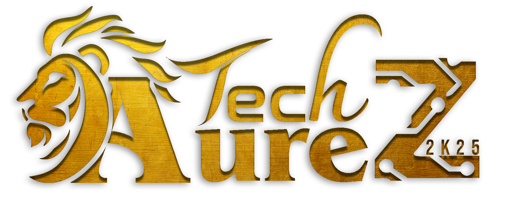

Kings Engineering College
A National Level
Date
10th & 11th March 2024
Time
09:00 AM - 05:00 PM
Date
10th & 11th March 2024
Time
09:00 AM - 05:00 PM
Hosted by the Department of Computer Science, Kings Engineering College
TECHAUREZ’25 is more than just a symposium—it’s a celebration of innovation, creativity, and collaboration.
This vibrant forum brings together bright minds to explore the ever-evolving world of technology.
From cutting-edge project presentations and competitive coding challenges to fun-filled non-technical events,
the symposium is designed to spark curiosity and inspire excellence.